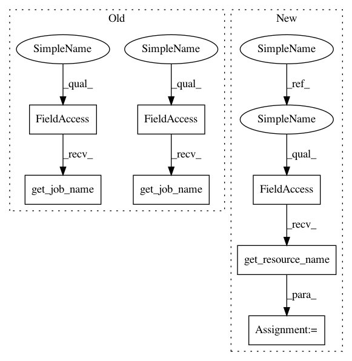

3f2623f982d5d77a4dee29acf0d931473bc024e1,polyaxon/scheduler/spawners/notebook_spawner.py,NotebookSpawner,start_notebook,#NotebookSpawner#Any#Any#Any#Any#Any#Any#Any#Any#Any#Any#Any#,130
Before Change
allow_commits=allow_commits),
command = ["/bin/sh", "-c"]
deployment = self.pod_manager.get_deployment(
job_name=self.pod_manager.get_job_name(),
volume_mounts=volume_mounts,
volumes=volumes,
labels=self.pod_manager.labels,
env_vars=None,
command=command,
args=args,
persistence_outputs=persistence_outputs,
persistence_data=persistence_data,
outputs_refs_jobs=outputs_refs_jobs,
outputs_refs_experiments=outputs_refs_experiments,
secret_refs=secret_refs,
configmap_refs=configmap_refs,
resources=resources,
ephemeral_token=None,
node_selector=node_selector,
affinity=affinity,
tolerations=tolerations,
ports=target_ports,
restart_policy="Never")
dep_resp, _ = self.create_or_update_deployment(name=self.pod_manager.get_job_name(),
data=deployment)
service = services.get_service(
namespace=self.namespace,
name=self.pod_manager.get_job_name(),
labels=self.pod_manager.get_labels(),
ports=ports,
target_ports=target_ports,
After Change
base_url=notebook_url,
notebook_dir=notebook_dir)]
def start_notebook(self,
persistence_outputs=None,
persistence_data=None,
outputs_refs_jobs=None,
outputs_refs_experiments=None,
resources=None,
secret_refs=None,
configmap_refs=None,
node_selector=None,
affinity=None,
tolerations=None,
allow_commits=False):
ports = [self.request_notebook_port()]
target_ports = [self.PORT]
volumes, volume_mounts = get_pod_volumes(persistence_outputs=persistence_outputs,
persistence_data=persistence_data)
refs_volumes, refs_volume_mounts = get_pod_refs_outputs_volumes(
outputs_refs=outputs_refs_jobs,
persistence_outputs=persistence_outputs)
volumes += refs_volumes
volume_mounts += refs_volume_mounts
refs_volumes, refs_volume_mounts = get_pod_refs_outputs_volumes(
outputs_refs=outputs_refs_experiments,
persistence_outputs=persistence_outputs)
volumes += refs_volumes
volume_mounts += refs_volume_mounts
shm_volumes, shm_volume_mounts = get_shm_volumes()
volumes += shm_volumes
volume_mounts += shm_volume_mounts
code_volume, code_volume_mount = self.get_notebook_code_volume()
volumes.append(code_volume)
volume_mounts.append(code_volume_mount)
secret_refs = validate_secret_refs(secret_refs)
configmap_refs = validate_configmap_refs(configmap_refs)
resource_name = self.resource_manager.get_resource_name()
args = self.get_notebook_args(deployment_name=resource_name,
ports=ports,
allow_commits=allow_commits),
command = ["/bin/sh", "-c"]
In pattern: SUPERPATTERN
Frequency: 3
Non-data size: 7
Instances
Project Name: polyaxon/polyaxon
Commit Name: 3f2623f982d5d77a4dee29acf0d931473bc024e1
Time: 2019-01-25
Author: mouradmourafiq@gmail.com
File Name: polyaxon/scheduler/spawners/notebook_spawner.py
Class Name: NotebookSpawner
Method Name: start_notebook
Project Name: polyaxon/polyaxon
Commit Name: 3f2623f982d5d77a4dee29acf0d931473bc024e1
Time: 2019-01-25
Author: mouradmourafiq@gmail.com
File Name: polyaxon/scheduler/spawners/notebook_spawner.py
Class Name: NotebookSpawner
Method Name: start_notebook
Project Name: polyaxon/polyaxon
Commit Name: 3f2623f982d5d77a4dee29acf0d931473bc024e1
Time: 2019-01-25
Author: mouradmourafiq@gmail.com
File Name: polyaxon/scheduler/spawners/job_spawner.py
Class Name: JobSpawner
Method Name: start_job
Project Name: polyaxon/polyaxon
Commit Name: 3f2623f982d5d77a4dee29acf0d931473bc024e1
Time: 2019-01-25
Author: mouradmourafiq@gmail.com
File Name: polyaxon/scheduler/spawners/dockerizer_spawner.py
Class Name: DockerizerSpawner
Method Name: start_dockerizer